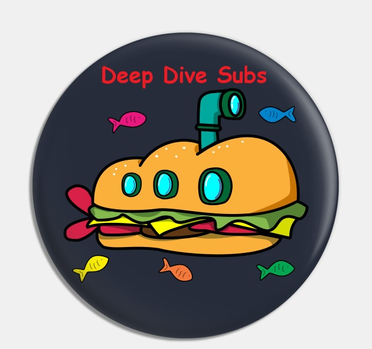

Overview
Purpose
Hello, my name is josh and I'm looking to create a website for my food truck. I want to have a website people can access to look up any information they may want about my business. I want it to include the full menu with pictures and pricing for what we offer. I would also like it to include the prices for each item as well. It’s also important that it shows our hours of operation and our location. I need to make sure it includes our contact info as well and all ordering info.
Audience
My audience is for people that want to know more information about my business such as food, pricing, hours, and location
Branding
Website Logo
Style Guide
Color Palette
Palette URL: https://coolors.co/396e94-e7c24f-a43312-381d2a-aabd8c| Primary | Secondary | Accent 1 | Accent 2 |
|---|---|---|---|
| [#396E94] | [#A43312] | [#AABD8C] |
Typography
Heading Font: Sansita Swashed
Paragraph Font: Quicksand
What questions will your visitors expect your site to answer for them?
My website will provide all the information customers should have answers about. It will include many various things such as the full menu with description of each item, the prices of each item, pictures of the items, our hours of operation, location, and contact information.
Why will your visitors come to your site instead of another to get this information or complete the actions?
Visitors will come to my website because it will be the perfect place for them to get any information about our products as well as answer any questions that they may have about our products. The website will also have the most accurate, informative, and up to date information on everything we will be selling, pricing, and hours of operation.
Why will people come to your site?
The reason customers will come to my site is to get insight and information about our food. Using all the information provided on their, customers will be able to determine if our location looks like a place that they would like to plan their next meal. The thought process behind the website is to make it clean and easy for customers to plan their next meal as well as get any desired information they may need before visit.
Navigation
Site Map
Content
Home page
[Written copy for the home page here]
Images for the Home page

[Page 2]
[Written copy for the Page 2 here]
Images for the Page 2


[Page 3]
[Written copy for the Page 3 here]
Images for the Page 3


Wireframes
Create three wireframes for your site. One for each page and list them here
Home
[Any additional details about home that the wireframe does not make clear]
[Page 2]
[Any additional details about page 2 that the wireframe does not make clear]
[Page 3]
[Any additional details about page 3 that the wireframe does not make clear]